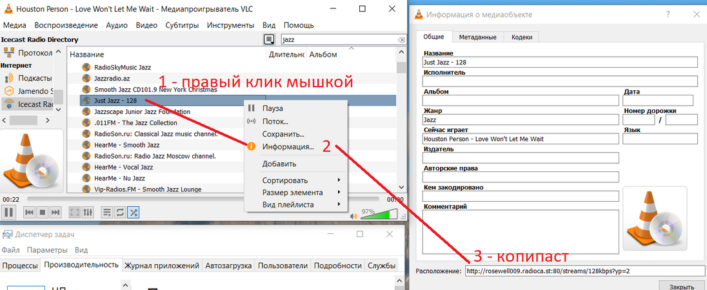
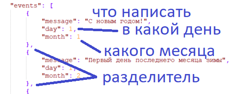

идея в том, что бы подключить старый телефон к зарядке, запустить эту программу, и оно будет показывать время, дату и что-то играть.
в нижней части - 3 кнопки (3 интернет-радио), которые можно кликнуть и оно подключится и будет играть, если что-то по этой ссылке отдает звук.
в центре - время и дата.
в центре ниже - информация привязанная к дате или просто сообщение по умолчанию.
в левом-верхнем углу - переход на страницу настроек.
в правом верхнем углу - закрыть программу.
в середине-слева - громкость убавить, -справа - громкость прибавить.
четыре управляющие кнопки можно выключить. их не будет на экране, и для перехода в настройки надо будет 5 раз нажать там, где была кнопка-шестеренка (левый-верхний угол).
(кнопки вверху будут в конце описания).
в первой строке ввода - именно то сообщение, которое показывается в нижней части экрана, если нет событий для текущего дня.
2-4 строки ввода - интернет-адрес трансляции. в программе уже забиты 3 случайных адреса, так что есть шанс, что сразу после нажатия на кнопку что-то будет играть.
потом большая горизонтальная кнопка: включение-выключение служебных кнопок. если она зеленая - кнопки на экране. если нет, то под ней написано, что для перехода в настройки надо "надо 5 раз кликнуть верхний-левый угол".
еще ниже пара кнопок для выбора темной или светлой темы. темная выглядит так:
можно оставить какую-то надпись и она всегда будет на экране. для этого - первая строчка в конфиге. например если это делается для пожилого человека, то там можно написать какие-то теплые слова.
(чем дальше - тем сложнее, можно не делать любой следующий шаг).
но эта штука работает чуть сложнее, и для этого есть 2 верхние кнопки: export-import. если нажать левую "в файл", то настройки сохраняться в файл simpleclockandradio.json в папку downloads телефона.
надо его забрать на компьютер и открыть в текстовом редакторе.
важно: после изменений в конфиг-файле, его надо положить на то же место (подменить) в папку downloads телефона. и потом нажать кнопку "из файла".
у меня есть notepad++ с плагином для форматирование json, но проблему "все в одну строчку" можно вообще не решать. надо просто исправить значения и не сломать структуру - форматирование не важно (хотя с ним понятнее).
сначала нижне строчки (link1..link3) - это ссылки на интернет-трансляции. можно поискать в интернете (на многих форумах есть прямые ссылки), но удобнее это делать с помощью интернет-плеера.

следующее снизу helloMsg - это то самое сообщение по-умолчанию. оно всегда будет на экране, если больше ничего не надо показывать на сегодня.
теперь смотрим в начало файла - там календарь. эти данные - для показа в конкретные дни года. для каждой даты надо написать запись из 3-х значений (месяц-день-сообщение), их может быть больше одного на любой день, и они идут через запятую.

мне не хватало погоды, но может быть есть желание показать курс валют, индекс биржы, или любую надпись из интернет-ресурса.
для этого есть 2 сложных значения: extLineUrl, extLinePath. их можно оставить пустыми - ничего не случится, но если их правильно написать, то будет...погода, или курс, или индекс.
(внимание: httpS может не работать, ищите http) примеры (это все jsoup - cookbook).
1) праздник сегодня:
"extLineUrl": "http://www.holidayscalendar.com/"
"extLinePath": "table.wphc_table tr td"
2) погода RP5:
"extLineUrl": "http://rp5.ru/%D0%9F%D0%BE%D0%B3%D0%BE%D0%B4%D0%B0_%D0%B2_%D0%99%D0%BE%D1%88%D0%BA%D0%B0%D1%80-%D0%9E%D0%BB%D0%B5"
"extLinePath": "div#ArchTemp span.t_0"
3) погода MSN:
"extLineUrl": "http://www.msn.com/en-us/weather/today/Yoshkar-Ola,Volga-Federal-District,Russia/we-city?iso=RU&savedegree=true&weadegreetype=C"
"extLinePath": "div.current-info span.current"